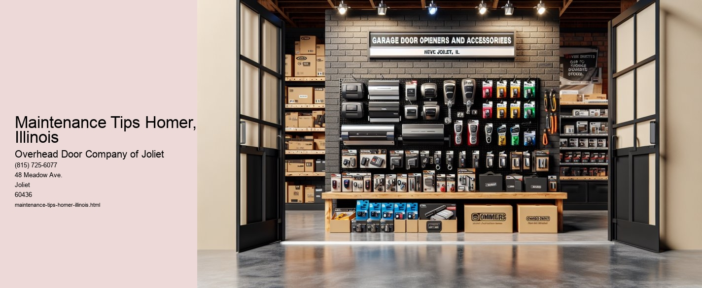

Serving Joliet, IL and surrounding Will County communities including:
Authorized Dealer for Overhead Door™ Openers and Accessories.

Maintenance Tips for Homeowners in Homer, Illinois
Introduction
Nestled in the heart of Illinois, Homer is a charming village filled with historical character and friendly neighborhoods. As a homeowner in this idyllic setting, maintaining your property is essential not only for preserving its aesthetic appeal but also for ensuring its longevity and functionality. This essay provides practical maintenance tips tailored to the unique climate and conditions of Homer, Illinois. By following these recommendations, you can safeguard your investment and enjoy a comfortable, efficient home throughout the year.
The Midwest experiences a range of weather conditions, from heavy snowfall in winter to thunderstorms in summer. To protect your home, conduct regular roof inspections and clean your gutters at least twice a year, preferably in spring and fall. Check for loose or damaged shingles and clear any debris from the gutters to facilitate proper drainage. This preventive measure helps avoid water damage and prolongs the life of your roof.
Homers climate varies significantly with the seasons, making a well-functioning HVAC system crucial for indoor comfort. Schedule annual inspections and tune-ups for your heating and cooling systems to ensure they operate efficiently. Replace air filters every few months to maintain air quality and reduce strain on the system. Regular maintenance not only enhances performance but also extends the lifespan of your HVAC units.
The exterior of your home faces constant exposure to the elements, which can lead to wear and tear over time. Inspect your homes siding and paint annually for signs of damage, such as peeling or cracking. Touch up paint as needed and consider repainting every 5-7 years to protect against moisture and pests. Proper care of your homes exterior enhances curb appeal and prevents more costly repairs in the long run.
A well-maintained lawn and garden contribute significantly to your homes overall appearance. Regularly mow the lawn, trim shrubs, and remove weeds to keep your yard tidy. Consider planting native plants that thrive in Illinois climate, as they typically require less water and maintenance. Seasonal tasks, such as raking leaves in fall and mulching in spring, help maintain healthy soil and promote plant growth.
Cold winters in Homer can pose a risk to your homes plumbing system. Insulate exposed pipes to prevent freezing and bursting during frigid weather. Regularly check for leaks or signs of corrosion, and address any issues promptly to avoid water damage. In addition, consider installing a water softener if your home is supplied with hard water, which can help prevent mineral buildup and extend the life of your plumbing fixtures.
Ensuring the safety and security of your home is a vital aspect of maintenance. Test smoke and carbon monoxide detectors monthly and replace batteries at least once a year. Check that all locks, windows, and doors are functioning correctly, and consider upgrading to more robust security systems if necessary. Additionally, ensure that outdoor lighting is adequate to deter potential intruders.
Conclusion
Owning a home in Homer, Illinois, is a rewarding experience, offering a sense of community and a peaceful environment.
Cost of Repair Services Homer, Illinois